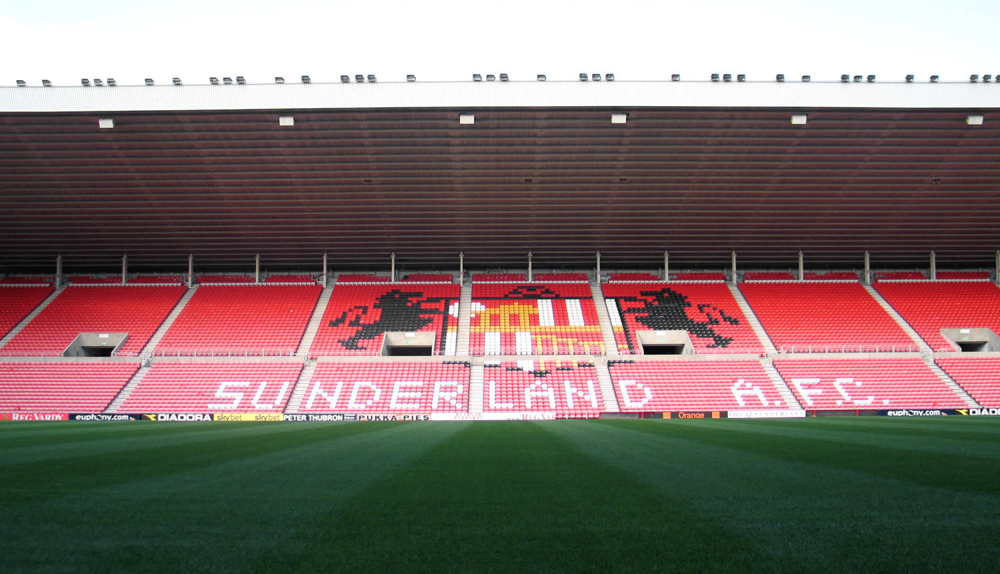
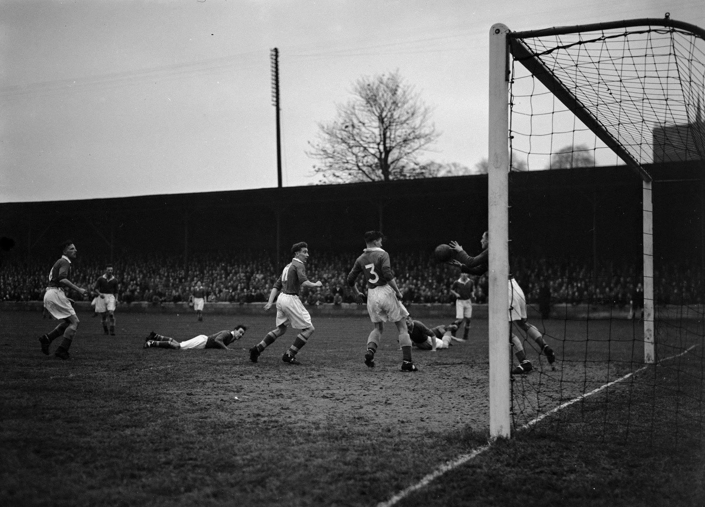
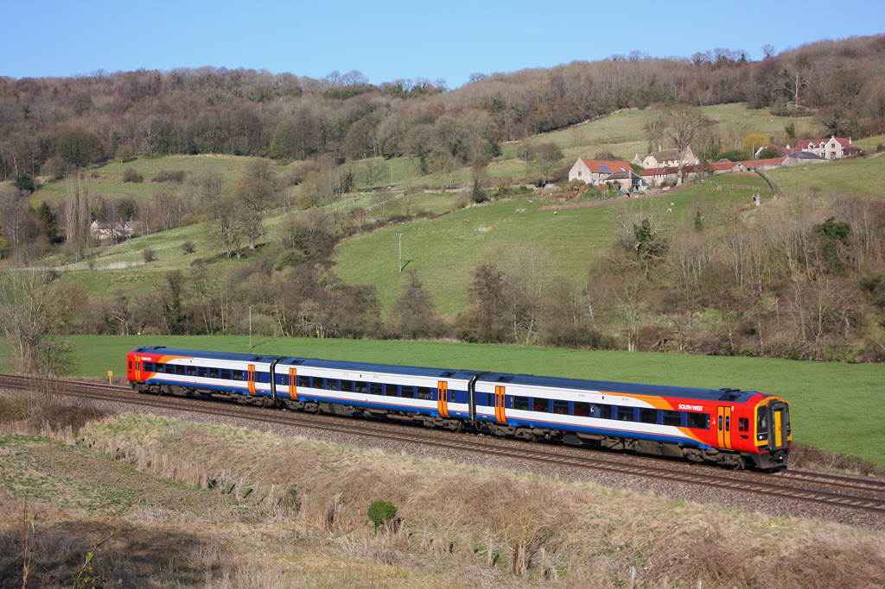
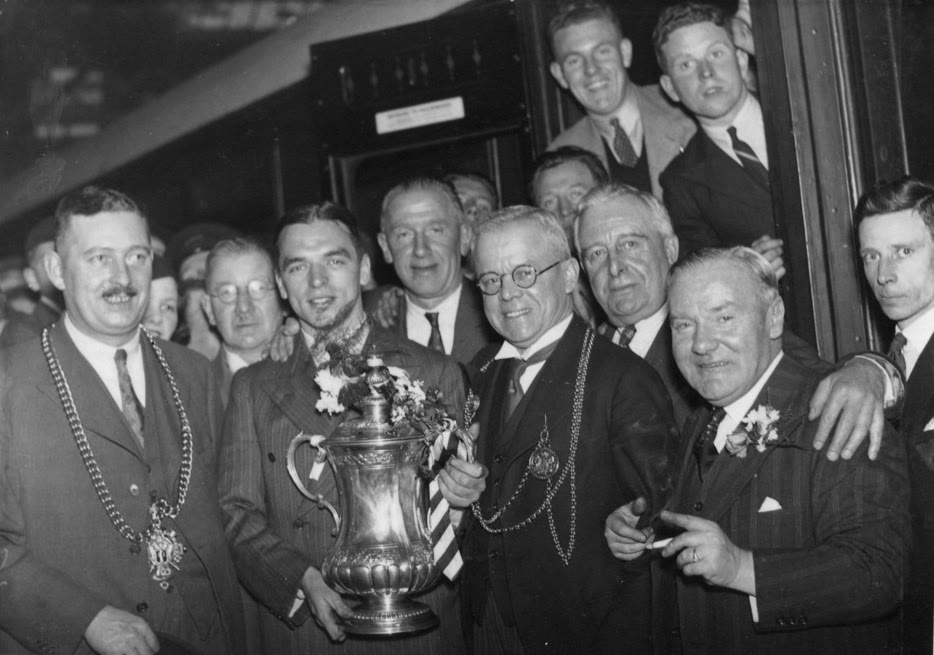
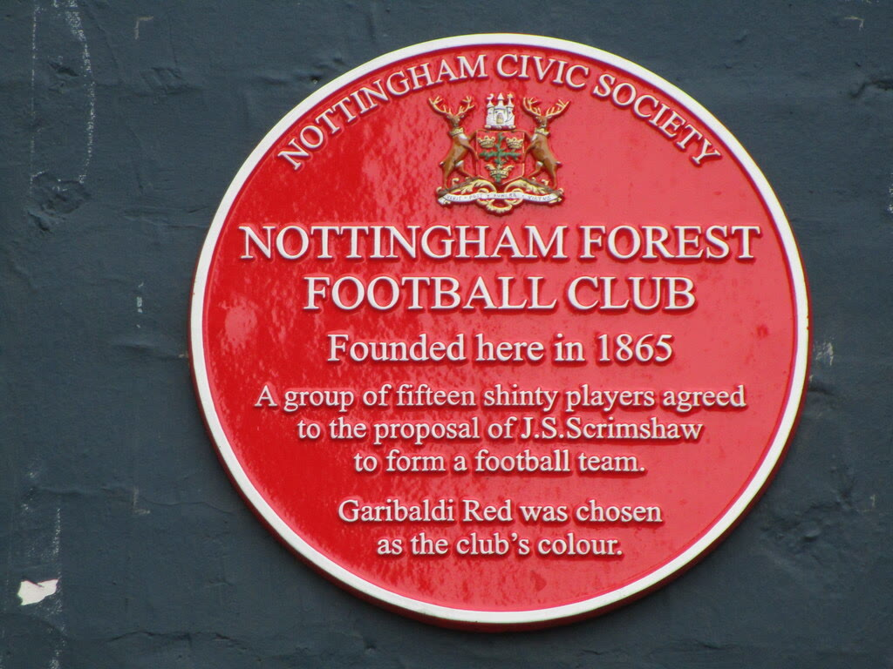

In 1979 won Nottingham Forest de European Cup. Een jaar later deden ze het opnieuw. Blackburn Rovers werd in 1995 kampioen van Engeland — gefinancierd door een lokale ondernemer die zijn jeugdclub naar de top bracht. Bolton Wanderers haalde wereldsterren als Jay-Jay Okocha en Youri Djorkaeff naar een stad van 130.000 inwoners. Sunderland won zes keer het Engelse kampioenschap en bouwde een stadion van 49.000 stoelen op de plek van een oude kolenmijn.
Deze reis brengt je per trein door het hart van industrieel Engeland. Je bezoekt clubs als Nottingham Forest, Blackburn Rovers, Bolton Wanderers, Sunderland en Oldham Athletic. Je woont wedstrijden bij op verschillende niveaus — van de Championship tot League Two — loopt door legendarische stadions, bezoekt clubmusea en ontdekt de verhalen achter de tribunes.
Sta op de tribune waar Brian Clough Europese glorienachten beleefde. Loop door de gangen van Ewood Park waar Jack Walker's droom werkelijkheid werd. Ervaar de passie van fans die generatie op generatie trouw blijven aan hun club, ongeacht de divisie.
Wat kun je verwachten?
- De geschiedenis van clubs die ooit tot de absolute wereldtop behoorden
- Het Engelse voetbal ervaren op verschillende niveaus — van Championship tot League Two
- Stadiontours en clubmusea vol verhalen
- Per trein reizen door de verschillende regio's van Engeland
- De voetbalcultuur van Engelse industriesteden






Wordt als eerste op de hoogte gebracht als deze reis beschikbaar is
Houd mij op de hoogte